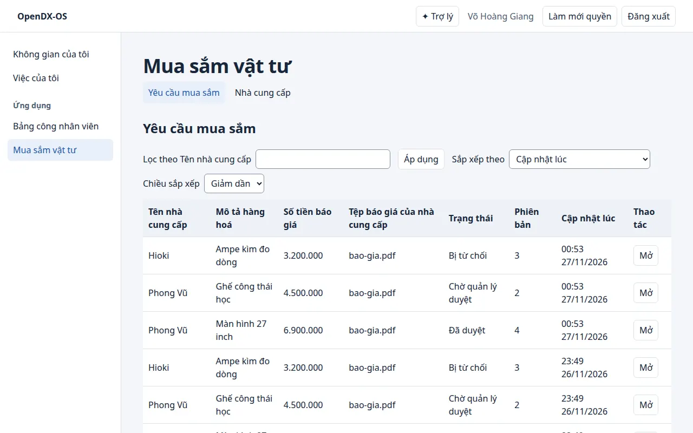
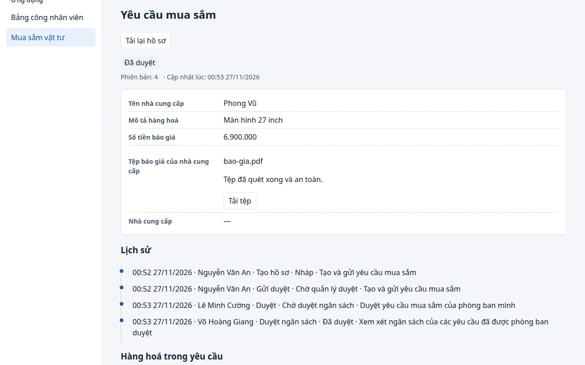
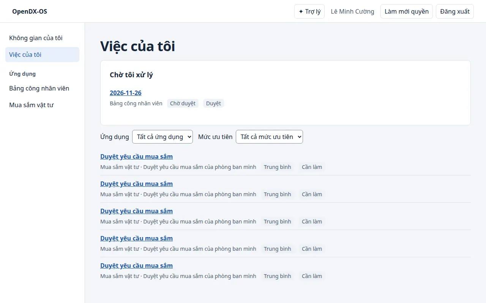
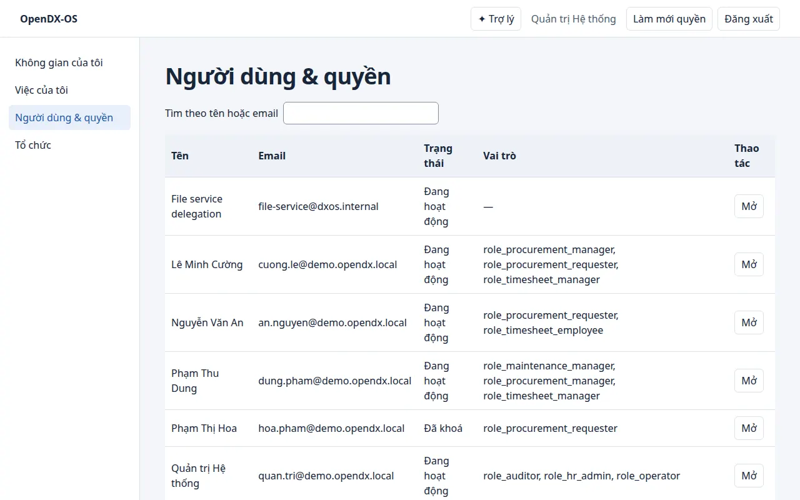

Ứng dụng nghiệp vụ chỉ là khai báo
Nền tảng mã nguồn mở ba tầng cho chuyển đổi số nội bộ. Viết một manifest, nền tảng dựng bảng, phân quyền, API, giao diện và quy trình, ngay khi hệ thống đang chạy.
git clone https://github.com/nguyentin05/opendx-os
▶Video 20 giây sắp có: cài một ứng dụng khi hệ thống đang chạy01 · Kiến trúc
Ba tầng, ranh giới rõ ràng
Ứng dụng không bao giờ kèm code backend. Ứng dụng dùng năng lực của tầng 2, tầng 2 chạy trên một nền tảng headless chỉ cung cấp API.
Gói khai báo
Manifest, workflow và tri thức. Cài và gỡ khi hệ thống đang chạy.
Năng lực và giao diện
Dùng chung cho mọi ứng dụng, mỗi năng lực một dịch vụ riêng.
cap-hr (H) phòng ban, nhân sựcap-process (P) command, tệp, lịch sửcap-data (D) dữ liệu thiết bịcap-ai (I) Trợ lý, tri thứccap-work “Việc của tôi”Dịch vụ lõi dùng chung
Không giao diện, chỉ API. Mọi request đều qua gateway và được kiểm quyền.
dxos-authz phân quyền mỗi requestdxos-operator cài gói ứng dụng02 · Thêm ứng dụng
Từ manifest tới màn hình, không deploy lại
Một ứng dụng mới được cài khi hệ thống đang chạy. Trên Kubernetes, gói ứng dụng là một tài nguyên DXApplication.
# apps/procurement/manifest.yaml (trích)
kind: DXApplication
spec:
roles:
- name: role_procurement_requester
- name: role_procurement_manager
- name: role_procurement_finance
tables:
- name: domain.procurement_requests
stateMachine:
initial: DRAFT
commands:
- name: approve
from: [SUBMITTED]
to: BUDGET_REVIEW
allowedRoles: [role_procurement_manager]
recordFilter: # không tự duyệt
created_by:
_neq: X-Hasura-User-Id
- name: reject
from: [SUBMITTED, BUDGET_REVIEW]
to: REJECTED
payload:
- column: rejection_reason
required: true # từ chối phải nêu lý do$ dxos-operator export-crd apps/procurement | kubectl apply -f -
dxapplication.dxos.io/procurement created
$ kubectl get dxapplications -w
NAME VERSION READY AGE
procurement 0.3.0 0s
procurement 0.3.0 True 14s- Bảng, khoá ngoại, trigger version và lịch sử trong PostgreSQL
- Quyền GraphQL theo cột và theo dòng cho từng vai trò
- Flow Kestra cho các command và việc được giao
- Ready sau khoảng 10 đến 20 giây trên cụm EKS thử nghiệm
03 · Thử ngay
Đưa một yêu cầu qua chuỗi phê duyệt
Bản mô phỏng ứng dụng Mua sắm vật tư chạy ngay trên trang này, với đúng máy trạng thái, nhãn và vai trò trong manifest. Đổi vai trò để thấy mỗi người chỉ có các thao tác của mình.
Gửi duyệt · người đề nghịDuyệt · trưởng phòng, không tự duyệtDuyệt ngân sách · tài chínhHuỷ yêu cầu · người đề nghị, từ Nháp hoặc Chờ quản lý duyệtTừ chối · trưởng phòng hoặc tài chính, phải nêu lý do- Mô tả hàng hoá
- Màn hình 27 inch
- Nhà cung cấp
- Phong Vũ
- Số tiền báo giá
- 6.900.000 ₫
- Tệp báo giá
- bao-gia.pdf · đã quét an toàn
- Trạng thái
- Nháp
- Phiên bản
- 1
Lịch sử
mô phỏng

Phạm vi phòng ban
Trưởng phòng chỉ thấy và duyệt yêu cầu của phòng mình; tài chính thấy mọi phòng.
Không tự duyệt
Trưởng phòng không duyệt được yêu cầu do chính mình tạo; nền tảng từ chối.
Không ghi đè
Command mang phiên bản đã cũ bị từ chối, không đè lên quyết định mới hơn.
Cập nhật trực tiếp
Khi người khác duyệt, danh sách và hồ sơ đang mở tự đổi sau vài giây.
04 · Quản trị
Keycloak xác thực, nền tảng phân quyền
Tài khoản nằm ở Keycloak hoặc danh bạ mà Keycloak liên kết. Vai trò và phòng ban nằm ở nền tảng, được kiểm lại ở mỗi request.
- Tạo người ở một nơiNgười mới tạo trong Keycloak hiện ngay trong “Người dùng & quyền”, cấp vai trò được trước lần đăng nhập đầu.
- Thu quyền có hiệu lực ngayVai trò bị thu mất tác dụng trong vài giây; tài khoản bị tắt trong Keycloak bị từ chối trong vài phút, kể cả với token còn hạn.
- Tổ chức theo phòng banMàn hình “Tổ chức” quản lý cây phòng ban và nhân sự, quyết định ai thấy dòng dữ liệu nào.

05 · Vận hành
Từ máy cá nhân tới cụm Kubernetes
Cùng một bộ cấu hình chạy bằng Docker Compose trên máy hoặc trên bất kỳ cụm Kubernetes nào; một workflow kiểm tra hai cách triển khai không lệch nhau.
Kubernetes cho mọi cụm
Manifest theo tầng, Pod đã siết bảo mật, overlay mẫu cho từng nền tảng. Đã chạy thật trên EKS với HTTPS qua ALB.
# mật khẩu đọc từ file của bạn, không nằm trong Git
Không dùng thì không chạy
Với component KEDA, năng lực tầng 2 và ClamAV về 0 khi rảnh, tự bật khi có việc.
Cập nhật trực tiếp
Subscription GraphQL qua WebSocket; quyền của kết nối được kiểm lại mỗi phút.
Trợ lý có trích dẫn
Trả lời từ tài liệu của tổ chức, kèm nguồn; thư viện cá nhân cho tài liệu riêng.
Bí mật ngoài Git
Mọi mật khẩu sinh lúc cài đặt; mỗi thay đổi đều được quét.
06 · Nguyên tắc
Nguyên tắc thiết kế
Những quyết định giữ cho nền tảng nhỏ, dễ hiểu và tự vận hành được.
Khai báo thay cho code
Quy tắc nghiệp vụ nằm trong manifest và workflow, nên cài ứng dụng không cần deploy.
Một nguồn quyền
Vai trò nằm trong core.user_roles; Keycloak chỉ trả lời “bạn là ai”.
Không dùng thì không chạy
Năng lực chỉ chạy khi có ứng dụng cần đến và có việc để làm.
Mã nguồn mở hoàn toàn
Code Apache-2.0 trên hạ tầng mã nguồn mở mà tổ chức tự vận hành được.
Chạy thử
Chạy trên máy trong vài phút
Docker Compose khởi động toàn bộ nền tảng. Script seed tạo một tổ chức demo và đưa một yêu cầu đi hết chuỗi phê duyệt.
$ git clone https://github.com/nguyentin05/opendx-os
$ cd opendx-os
$ scripts/init-env.sh
$ docker compose up -d --build
$ scripts/test-compose.sh
$ scripts/seed-demo.py seed
$ scripts/seed-demo.py flow